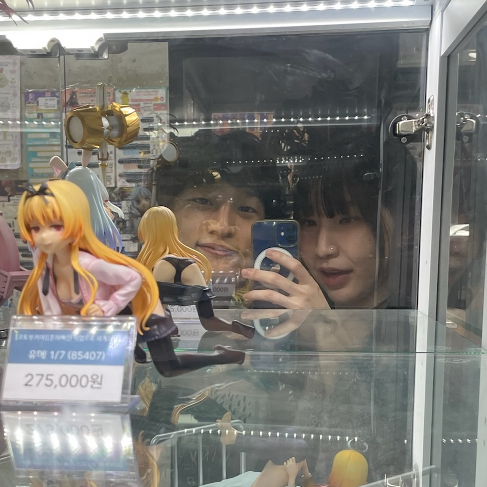
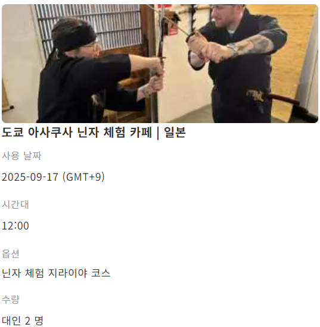

✈️ 인천(T2) → 나리타 / 9월 15일 월요일 08:15 출발
✈️ 나리타 → 인천(T2) / 9월 19일 금요일 19:05 출발
✈️비행기 예약 내역 : 링크
|  |
Welcome to our homepage |
 변신시간 (주간) 11시 13시 15시 17시 (야간) 19시~21:30까지 30분단위
변신시간 (주간) 11시 13시 15시 17시 (야간) 19시~21:30까지 30분단위
 건담카페도 가보자 !!
건담카페도 가보자 !!


🥷닌자카페 예약 내역 : 링크
| 층수 | 주요 상품 & 특징 |
|---|---|
| B1F | 신선식품, 야채, 음료, 벤토, 주류 등 식료품 |
| 1F | 컬러렌즈, 시즌 용품, 간식, 기념품, 파티잡화 |
| 2F | 스낵, 초콜릿, 캔디, World Eats, 반려동물 용품 |
| 3F | 화장품, 건강식품, 의약품, 스포츠/헬스용품, 일상용품 (TAX-FREE 카운터) |
| 4F | 명품 브랜드 (루이비통, 샤넬, 구찌 등) 병행수입 저가 판매 |
| 5F | 산리오, 헬로키티, 귀멸의 칼날 등 캐릭터 굿즈 |
| 6F | 전자제품, 미용가전, 스마트폰 액세서리, 문구류 |
| 7F | 할인 명품, 여행용품, TAX-FREE 카운터 |
팁: 24시간 영업, 3층에서 TAX-FREE 쇼핑 가능